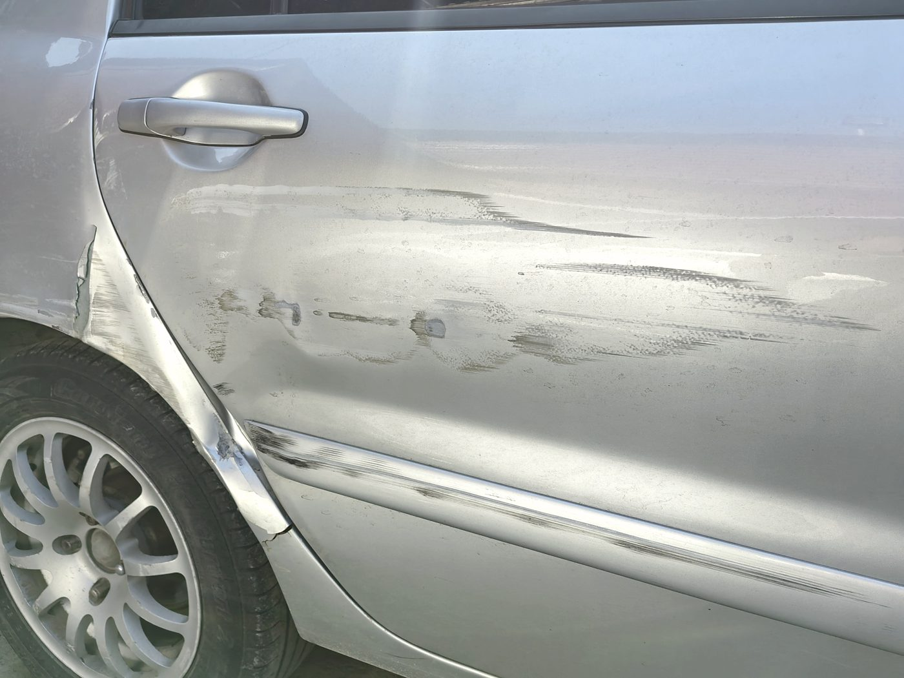
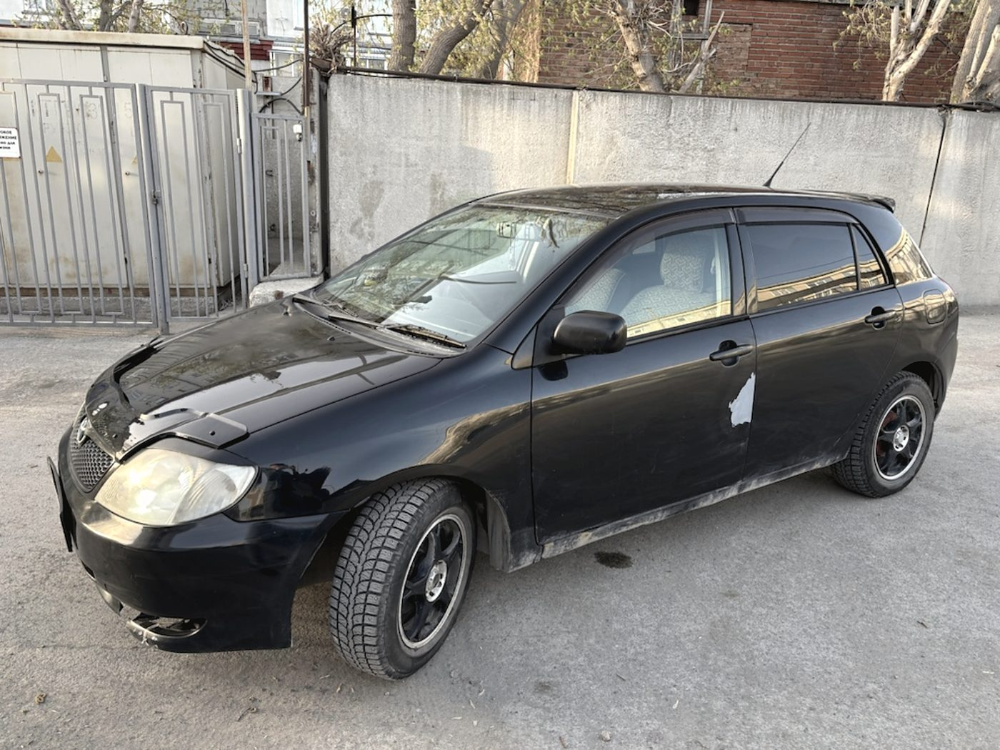
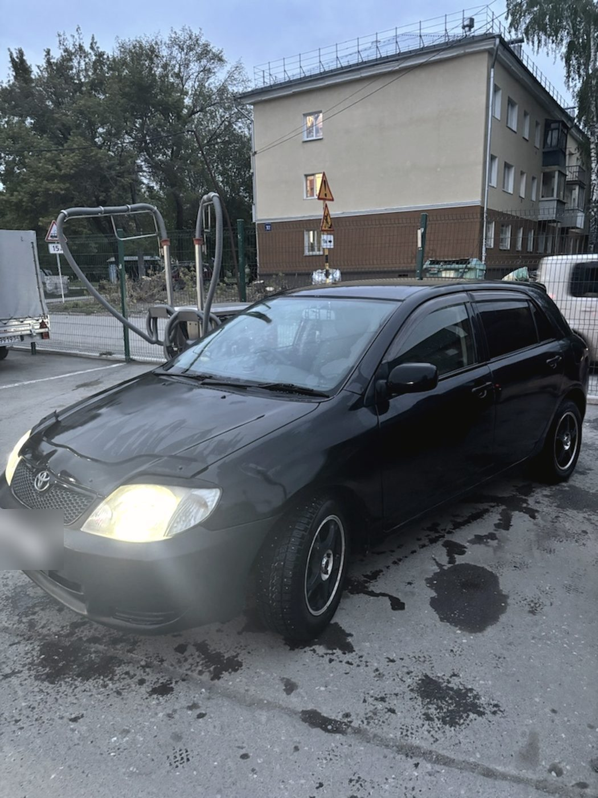
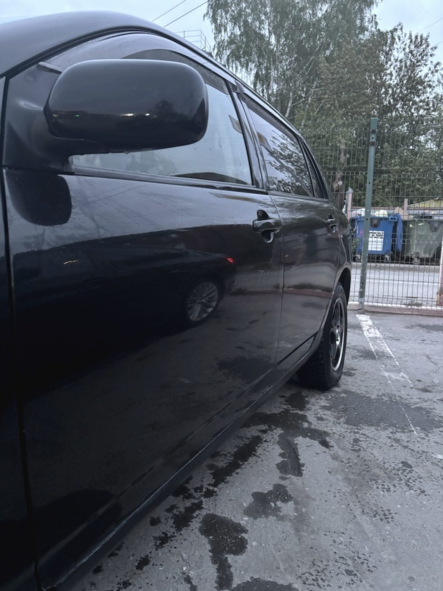
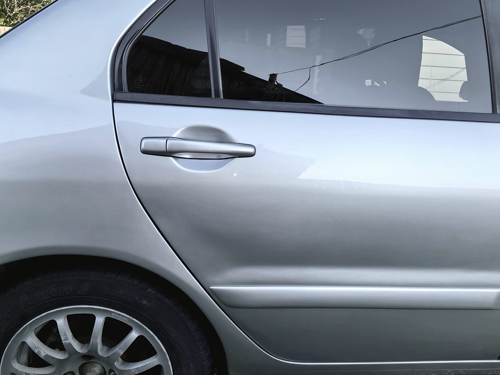
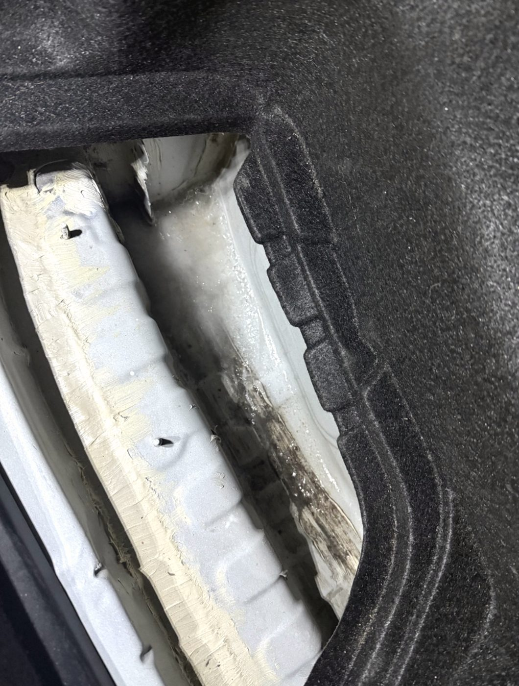
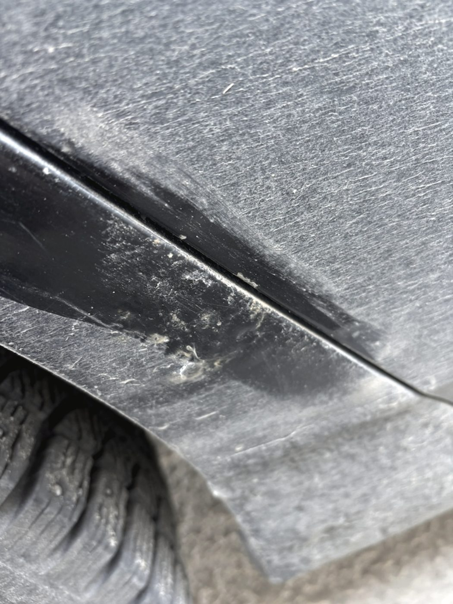
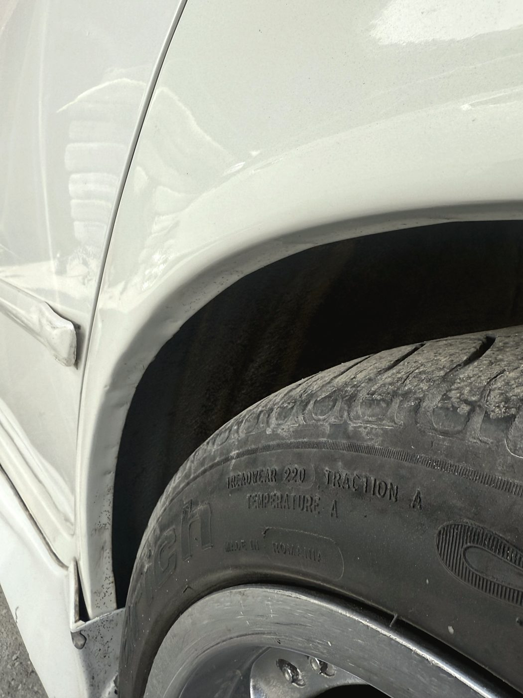
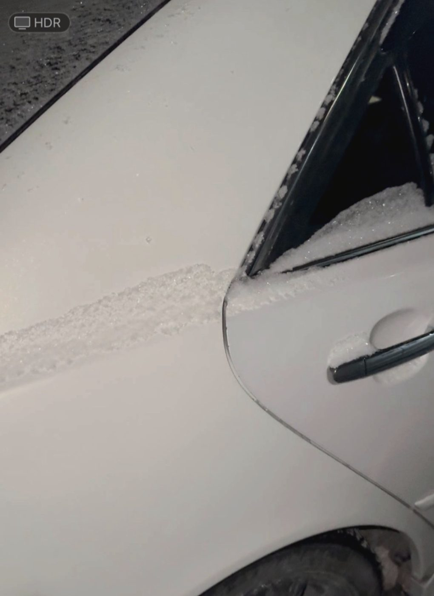

Дверь: было
Задир вдоль всей двери и заднего крыла, металл смят по ребру.
Кузовной ремонт · Октябрьский район
Пороги, арки, сварка, геометрия после ДТП, покраска. В отзывах о нас чаще всего повторяется одна фраза: «в конце цена не изменилась». Для кузовного это и есть главный вопрос — поэтому сайт начинается с неё.
Смета
Потому что настоящий объём виден только после вскрытия. Порог снаружи выглядит целым, а под накладкой — сквозная коррозия и труха. Дальше есть два пути: молча сделать больше и выставить счёт на выдаче или позвонить и договориться заранее. Мы звоним.
Так это описал клиент в отзыве: «После вскрытия порогов выявились доп. работы, по которым была согласована доплата. По окончанию работ цена не изменилась».
Один случай



Мы снимаем машину на приёмке — до того, как к ней притронулись. Это нужно обоим: вам, чтобы видеть, что было, и нам, чтобы потом не спорить о происхождении царапины на другом крыле.

Задир вдоль всей двери и заднего крыла, металл смят по ребру.

Ребро восстановлено, покрашено в цвет, переход по крылу не читается.

Вот из-за чего меняется объём. Снаружи накладка, под ней — вот это.
Что делаем
Вырезаем гнилой металл, вварим новый, обрабатываем антикором изнутри. Это основная работа, с которой к нам приезжают.
Вытягиваем кузов после ДТП и выставляем зазоры. Приезжали и с заключением страховой «гибель автомобиля» — машина уехала своим ходом.
Лонжероны, пол, чашки, силовые элементы. Варим то, что держит кузов, а не только то, что видно снаружи.
Локально и целыми элементами. Косметика по бамперу и крылу — тоже сюда, и обычно без месячной очереди.
Правим вмятины, паяем треснувший пластик бамперов, полируем после ремонта.
Берёмся и за грузовые: кабины, двери, крылья, силовая часть. Габариты цеха позволяют.



Кадры с приёмки. Мы специально не показываем только красивое: по таким снимкам видно, с чем мы обычно имеем дело и на что смотрим при осмотре.
Честно
«Обливать соседнюю машину кислотным грунтом и тут же пылить ещё 4–5 соседних — это прям…»
Отзыв в 2ГИС на четыре звезды, 28 мая 2025
Претензия справедливая, и спорить тут не с чем: опыл грунта не должен доходить до чужого автомобиля. Машины в зоне работ закрываем, подготовку и покраску разносим по времени. Если ваша машина стоит у нас в очереди и рядом идут малярные работы — скажите, переставим.
Второй отзыв — про цвет и подтёки, оценка на одну звезду. Цвет подбираем и показываем выкрас на образце до того, как красить деталь: на солнце и в тени серебристые и перламутры выглядят по-разному, и увидеть это лучше до, а не после. Если результат вас не устроил — говорите сразу, переделываем.
Отзывы · 4,9 из 5 по 115 оценкам в 2ГИС
«Страховая сделала заключение „гибель автомобиля“. Но мастера буквально за пару дней всё сделали»
Алексей · Toyota RAV4 после ДТП на трассе · отзыв в 2ГИС, 7 ноября 2024
Изначально ехал на ремонт порогов, пола, арки и покраски двери. После вскрытия порогов выявились доп. работы, по которым была согласована доплата. По окончанию работ цена не изменилась.
Дмитрий · 24 мая 2026
Отремонтировали сгнившие пороги и арки быстро и, самое главное, качественно, сделали антикоррозийную обработку. Цены оказались ниже, чем у некоторых гаражных мастеров. По каждым моментам давалась обратная связь, фото и видео.
Сергей · 2 июня 2026
Замят багажник, нормально не закрывался и пропускал воду. Мастера сказали, что поставят по зазорам за 4 часа, — управились за 3. Без повреждений краски и без новых вмятин.
Отзыв в 2ГИС · 15 мая 2025
Нужно было покрасить косметику — бампер и крыло. Сделали всё отлично, а главное, не пришлось ждать месяц очереди.
Виктор · 3 октября 2024
Контакты